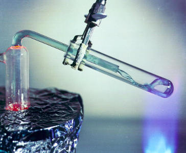
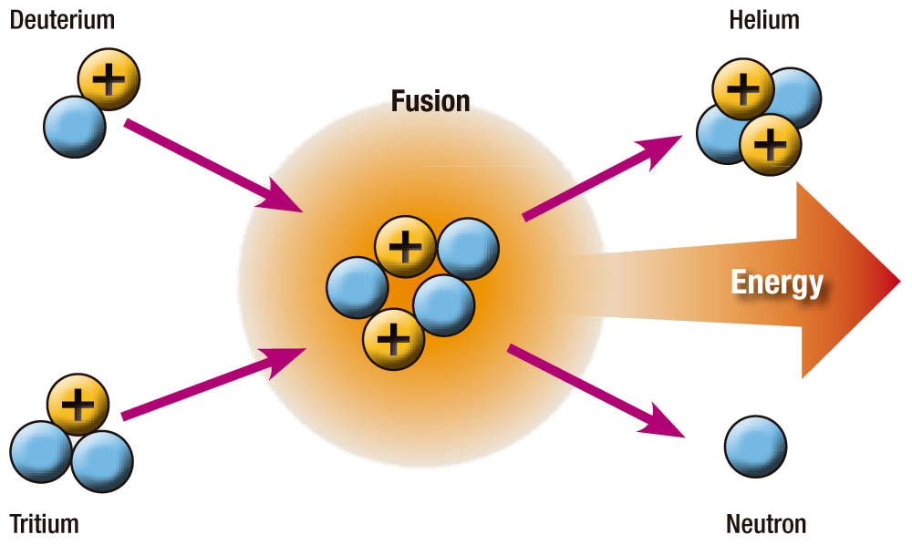
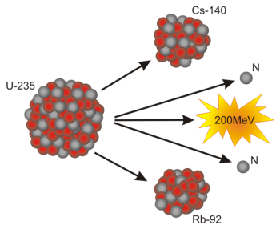

Pressurized Water Reactors (PWR)
- Uranium 235 Fuel
- Water coolant
- High Operating Pressure
- Steam turbine (These are really big)

Ian Paterson
Presented by Ian Paterson
|
Nuclear Fusion

|
Nuclear Fission

|
| Options: | What you Mine | Fissile Material (What you burn) |
|---|---|---|
| 1 | U235 |
U235 <- This is what we usually use |
| 2 | U238 |
Pu239 |
| 3 | Th232 |
U233 <- This is what we would like to use |
Watts Bar - Tennessee
Reactor pressure vessel for AP1000
6 = Previously molten material
Additional information:
Full list of III+ Gen designsTh-232 + neutron => Pa-233 => 27 days => U-233
U-233 + neutron => Fission products + Energy + more neutrons
Questions?
 Two Fluid Design
Two Fluid Design